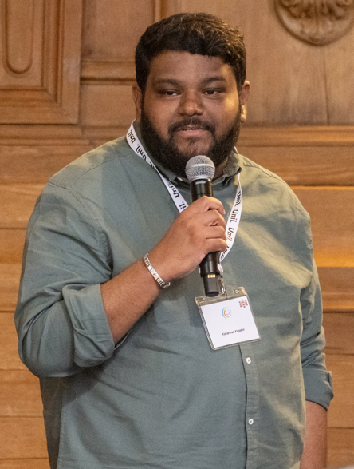
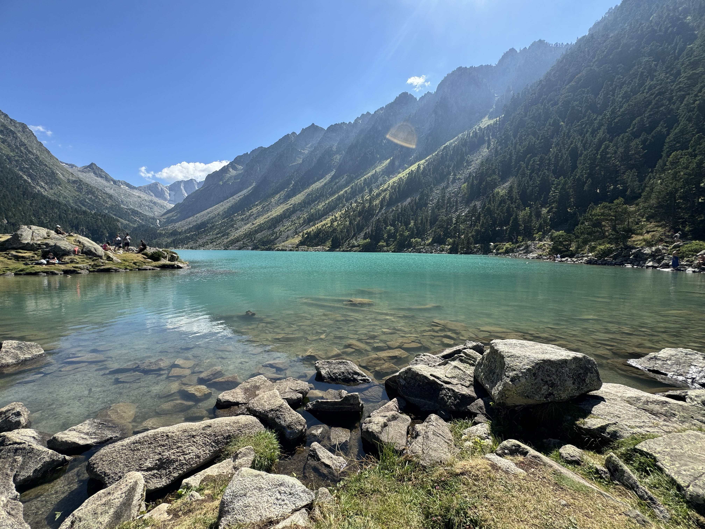
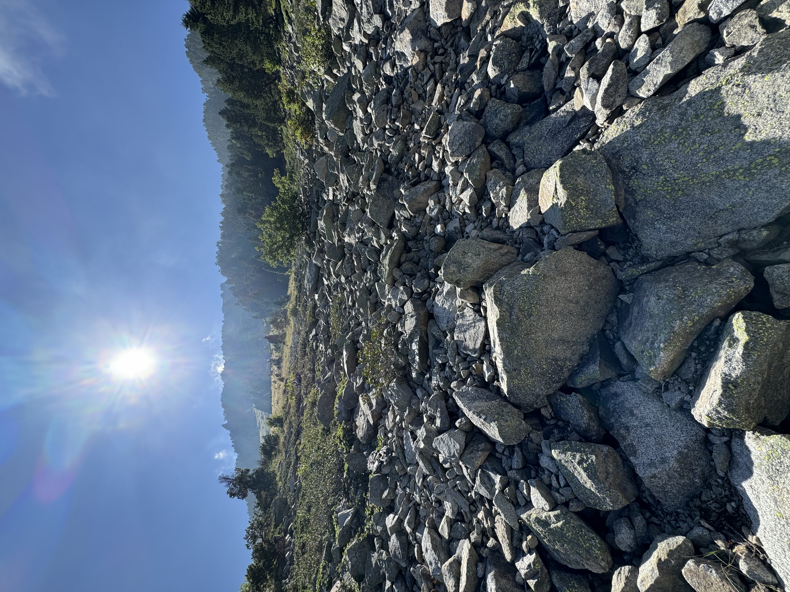
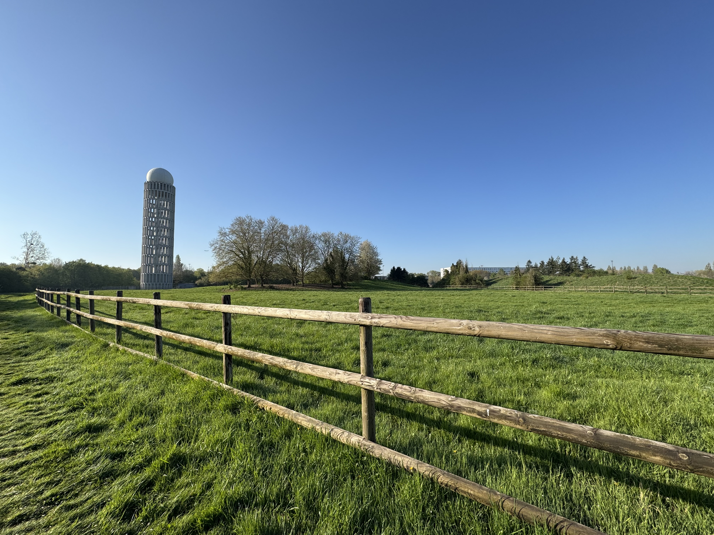

Kishanthan Kingston
Ingénieur de Recherche en IA/ML
À propos de moi
Je suis ingénieur de recherche en IA/ML, issu d’un parcours orienté recherche. Je développe actuellement des modèles de deep learning appliqués à la descente d’échelle des données climatiques à l’IPSL (Institut Pierre-Simon Laplace).
Mon travail consiste à concevoir et évaluer des modèles d’apprentissage automatique robustes appliqués à des jeux de données scientifiques de grande dimension, avec un intérêt particulier pour l’apprentissage par transfert, l’évaluation rigoureuse des performances et le respect des contraintes physiques des sorties haute résolution.
Fort d’expériences en imagerie médicale, en traitement du signal vocal et en modélisation climatique, je m’intéresse à la conception de systèmes d’IA fiables, explicables et évolutifs, capables de faire le lien entre innovation scientifique et applications concrètes à fort impact.
Formations
- 🎓 Master Automatique, Robotique, parcours Ingénieries des Systèmes Intelligents – Sorbonne Université.
- 🎓 Licence de Physique – Université Paris Cité.
Compétences & Expertise
- Recherche en Intelligence Artificielle (IA) – Solide formation théorique et expérience pratique.
- Deep Learning & Vision par Ordinateur – Développement de projets en IA et vision par ordinateur.
- Segmentation d’images médicales – Expérience en recherche appliquée chez Dassault Systèmes.
- Traitement du signal vocal & Apprentissage automatique – Expérience de recherche à l’ISIR.
- Travail en équipe & Collaboration interdisciplinaire – Collaboration avec des médecins, neuropsychologues, physiciens et climatologues au sein d’équipes de recherche multidisciplinaires.
Langages de programmation
- Python
- C++
- MATLAB
Bibliothèques & Frameworks
- PyTorch
- TensorFlow
- Scikit-Learn
- NumPy
- Pandas
- Xarray
Outils & Environnement
- Linux
- LaTeX
- Git
- Slurm (HPC)
Langues
- Français – C2
- Tamoul – C2
- Anglais – B2/C1
Axes de recherche
Axes de recherche
- Apprentissage automatique informé par la physique – Intégration explicite de contraintes physiques dans les modèles de deep learning pour la modélisation climatique.
- Modèles génératifs pour données scientifiques – Approches par diffusion et méthodes génératives appliquées aux données médicales et environnementales.
- IA pour la santé – Traitement du signal et vision par ordinateur pour l’aide au diagnostic et à la décision.
- IA robuste et explicable – Amélioration de la fiabilité, de la robustesse et de l’interprétabilité des systèmes d’IA en contexte sensible.
Objectif professionnel
Mon objectif est de contribuer à des projets de recherche en IA à fort impact, situés à l’intersection du deep learning, de la modélisation scientifique et des applications concrètes, notamment en sciences du climat et en santé. Je m’intéresse particulièrement à des environnements combinant :
- Recherche en IA
- Innovation technologique
- Applications répondant à des enjeux sociétaux majeurs
Publications
International Conference on Functional Imaging and Modeling of the Heart
Pages: 242–252
Journal of Hepatology (Elsevier), Volume 80
Page: S207
Expériences professionnelles
Ingénieur de Recherche en IA/ML – IPSL
- Revue de littérature et analyse de l’état de l’art
- Exploitation de jeux de données à grande échelle tels que ERA5, CERRA, CMIP6, GeoMIP et ARISE
- Mise en œuvre de techniques d’apprentissage par transfert pour adapter les modèles d’IA à différents scénarios climatiques
- Évaluation de la plausibilité physique des sorties haute résolution générées par les modèles
- Correction des biais et amélioration de la précision des projections climatiques haute résolution
- Contribution au développement d’une plateforme intuitive permettant l’import de données climatiques, la génération de sorties haute résolution et leur visualisation
Ingénieur de Recherche en Imagerie Médicale – Dassault Systèmes
- Revue de littérature sur la segmentation d’échocardiogrammes 2D sans contraintes de forme a priori
- Implémentation de filtres de débruitage et de méthodes de segmentation (Morphological Snakes, UneXt, nnU-Net)
- Évaluation des performances via les métriques Dice, IoU, distance de Hausdorff ainsi que PSNR, SNR, SSIM et FoM pour les filtres appliqués
- Analyse de données au format NIfTI
- Génération de vérités terrain à l’aide d’opérateurs morphologiques (érosion, dilatation, lissage)
- Alignement de jeux de données par appariement d’histogrammes
- Article présenté à FIMH 2025 (co-auteur) : « Semantic Video Diffusion Models for Long Echocardiogram Generation »
Ingénieur R&D en Traitement du Signal et Apprentissage Automatique – ISIR
- Revue de littérature
- Collaboration avec des médecins de l’hôpital de la Pitié-Salpêtrière (BLIPS) pour l’analyse du signal vocal dans le cadre de l’encéphalopathie hépatique
- Extraction de caractéristiques prosodiques et acoustiques
- Entraînement de modèles : SVM, Random Forest, Gradient Boosting, réseaux de neurones
- Développement d’un algorithme prédictif d’aide à la décision
- Abstract présenté au congrès EASL 2024 et aux 95es Journées Scientifiques de l’AFEF (co-auteur)
Stagiaire Recherche & Développement – Learning Planet Institute
- Recherche sur les mécanismes du chant des oiseaux pour des applications en prothèse vocale humaine
- Analyse de la propagation des ondes acoustiques dans l’organe vocal des oiseaux
- Étude des relations forme–mouvement–son
- Simulation 3D et modélisation par éléments finis (FEM) avec COMSOL Multiphysics
- Développement d’approches prédictives en modélisation aéroacoustique
CV complet
Photographie
La photographie est un intérêt personnel qui me permet d’explorer les motifs naturels, les structures et la lumière. Elle reflète ma curiosité pour les systèmes complexes et s’inscrit dans la continuité de mon approche scientifique en intelligence artificielle.




